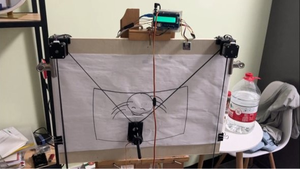

Wall Draw
SVG Polargraph
2022/6/30 by DKZ

一个失败的项目，原因是精度不够，这三年玩了不少智能硬件嵌入式开发相关的玩具，有一点收获吧，一些C语言，C++计算机底层，硬件（esp32，arduino）和操作系统（FreertOS），通信协议（I2C，UAET），3D打印（blender）的经验，但这个兴趣可能会暂停一段时间。
Experience is the name everyone gives to their mistakes.
Hardware
- 1x Arduino UNO R3
- 1x L293D Motor Drive Shield v1
- 2x Stepper Motor
- 1x MG90S Servo Motor
- 1x GT2 Pulley 16 Teeth Set 6mm
- 1x GT2 Rubber Belt (5M) 6mm
┌─┐
┌┼┼┼┐ ┌───────────────────────┐
┌┴───┴───┐ │┼─────────────────────┼│
│Servo │ ││ ││
│ │ ││ LCD ││
└────────┘ │┼─────────────────────┼│
▲brown └──┼────────────────────┘ ┌──────┐
│▲red │ │ │
│┐▲yellow │ ┌────────┤M5Atom│
│┼│ │ │ │ │
│┼│ │SCL │Rx └──────┘
│┼│ │SDA │Tx
┌┴─┴───────────▼─────────────▼┐
│***SER1 │
│***Servo2 │ ┌─────────┐
│ │ │ ┌──┐ ┌──┐ m2 │ ├─────────┤
┌─────────┐ │ │ │ │ │ │ │ +@├──────► │#2 │
├─────────┤ │ m1 │ │ │ │ │ │ -@├──────► │Step ├────┐
│#1 │ ◄─────┤@+ │ │ │ │ │ │ GND@│ │Motor ├────┘
┌────┤Step │ ◄─────┤@- └──┘ │ │ │ │ +@├──────► │ │
└────┤Motor │ │@GND └──┘ └──┘ -@├──────► ├─────────┤
│ │ ◄─────┤@+ │ └─────────┘
├─────────┤ ◄─────┤@- PWR btn │
└─────────┘ │ @@ ** A1 │
└────┬┬───────────────────────┘
││
││
▼│
5v▼
GND
Process
1.3b setting and create task
2.m5atom AP setting task and connect
3.m5atom client request cmd from 3b
4.m5atom send cmd to arduino by serial
5.arduino execute cmd and draw
6.arduino send ready to m5atom
7.goto 3
1.setting and create task 5.execute
┌───────────────┐ 2.setting task ┌─────────────┐
│ │ 3.req ┌──────┐ cmd R │ │
│ Raspberry ◄────────────────┘ M5 ◄─────────────────┘ Arduino │
│ Pi 3b ┌────────────────► Atom ┌─────────────────► Uno │
│ │ cmd │ │ 4.serial │ │
│ │ └──────┘ cmd └─────────────┘
└───────────────┘
Arduino Uno
Protocol
- M moveTo(float x,float y)
- L lineTo(float x,float y)
- C curveTo(float x0,float y0,float x1,float y1,float x,float y)
- Z closePath()
- I IK(float x,float y)
- F FK(float l1,float l2)
- R ready()
- P pause()
- W setting(float width,float height,int pen_angle)
- O setting(float offsetx,float offsety,float scale,int curve_level)
- G go(int step1,int step2,int f1,int f2,int angle) FORWARD=1 BACKWARD=2
serial
│
│
┌──▼───────────┐ ┌───────┐ ┌──────────┐
│ listenSerial ├─────► doCmd ├─────► parseCmd │
└──┬───────────┘ └─┬─────┘ └─┬────────┘
│ │ │
│ ┌─▼─┐ ┌─┴────────────┐ ┌───────┐ ┌─────────────┐ ┌────┐
│ │ R │ │ C curveTo ├───────► doPen ├───┤ deCasteljau ├─┤ IK │
│ └─┬─┘ └─┬────────────┘ └───────┘ └─────────────┘ └────┘
│ │ │
│ │ ┌─┴────────────┐ ┌───────┐ ┌───────────┐ ┌────┐
┌──▼──┐ ▼ │ L lineTo ├───────► doPen ├───┤ bresenham ├───┤ IK │
│ btn │ serial └─┬────────────┘ └───────┘ └───────────┘ └────┘
└──┬──┘ │
│ ┌─┴────────────┐ ┌───────┐ ┌────┐
│ │ M moveTo ├───────┤►doPen ├───┤ IK │
┌─▼─┐ └─┬────────────┘ └───────┘ └────┘
│ P │ │
└─┬─┘ ┌─┴───────┐ ┌────────┐
│ │ I IK ├────────────► toStep │
│ └─┬───────┘ └────────┘
▼ │
serial ┌─┴──────────────┐ ┌────────┐
│ Z closePath ├─────► lineTo │
└─┬──────────────┘ └────────┘
│
┌─┴──────────┐ ┌───────┐
│ P pause ├─────────► doPen │
└─┬──────────┘ └───────┘
│
┌─┴──────────┐ ┌────────┐
│ R ready ├─────────► moveTo │
└─┬──────────┘ └────────┘
│
┌─┴─────────────┐
│ W wSetting │
└─┬─────────────┘
│
┌─┴─────────────┐
│ O oSetting │
└─┬─────────────┘
│
┌─┴───────┐ ┌────────┐
│ F FK ├────────────► toStep │
└─┬───────┘ └────────┘
│
┌─┴───────┐
│ G go │
└─────────┘
M5atom
┌───────┐ ┌─────────────────┐ ┌─────────────────┐ ┌────────┐
│ setup ├────► StartHTTPClient ├───► CheckServerTask ├─┬─► set?ip ├──────►*blue
└───────┘ └─────────────────┘ └─────────────────┘ │ └─┬──────┘
│ │
│ ┌─┴────────┐
│ │ get?line │
│ └─┬────────┘
│ │
│ ┌─┴──────────┐ ┌─────────────┐
│ │ get?server ├──► startServer │
│ └────────────┘ └─────────────┘
│
│
│ ┌─────────────┐
└─► scanNetwork │
└─┬───────────┘
│
┌─┴───────┐
│ startAP │
└─┬───────┘
│
┌─┴───────────┐
│ startServer │
└─────────────┘
serial1
│ ┌──────┐
│ │ │cmd==""
┌──────┐ ┌──────────▼───┐ R ┌───────▼─┐ │
│ loop ├─┬─► listenSerial ├─┬───► nextCmd ├──┬─┴──┐
└──────┘ │ └──────────────┘ │ └─────────┘ │ ├───────►serial1
│ │ │ │
│ │P P│ ┌──┴─────┐
│ └───► pause ◄───┘ │ getCmd │
│ *red └──┬─────┘
│ │
│ ┌─────┐ ┌────────┐ ┌──▼──────────┐ cmd *green
└─► btn ├──────────────► getCmd ├─────► cmdCallback ├─┬──►
└──┬──┘ └───┬────┘ └─────────────┘ │
│ │ │P
┌──┴────────┐ ┌───┴─────┐ └──►
│ webServer │ │ nextCmd │
└───────────┘ └─────────┘